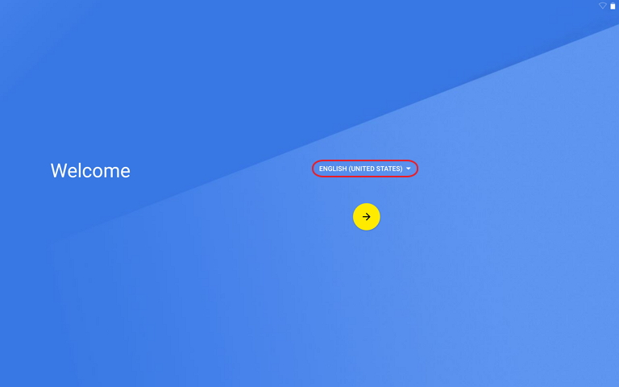

FAQ
Q: 如何取消開機密碼或螢幕鎖定密碼？
A: 如要解除加密狀態，必須恢復原廠設定，但是這會清除平板電腦中的所有資料。KALOS 2 平板電腦恢復原廠設定的方式：進入系統時，點擊【設定】→【備份與重設】→【恢復原廠設定】→【重設平板電腦】
Q: KALOS 2 是否可以連接電腦當隨身碟(隨身碟模式)存放資料?
A: 可以的，您只要透過隨機附贈的 USB Type C 線或市售一般的 USB Type C傳輸線，將此線的 Micro USB 端接在電腦上，另一端 USB Type C 插頭接在KALOS 2 機身側邊的插孔。在電腦的檔案總管裡，就可以直接存放資料在KALOS 2 平板裡了。
Q: 隨身碟模式是否支援 Mac OS?
A: 很抱歉，KALOS 2 隨身碟模式只能在 Windows 系統下使用。如您使用Windows XP 系統，請先確認已更新至 Media Player 11 才可更新驅動程式。
Q: 我要如何偵測 KALOS 2 的 GPS 有沒有訊號?
A: 建議您可以透過 Google Play 裡，搜尋關鍵字 “GPS Test”，您就可以透過此免費軟體看到 GPS 的衛星訊號狀態。 (注意: 此 GPS 如同一般市面上販賣的 GPS 一樣，如果在室內或者有遮蔽物的場所使用，GPS 衛星訊號都會受到影響甚至沒有訊號)
Q: KALOS 2 所支援的衛星訊號為何種規格?
A: KALOS 2 支援美國GPS系統(Global Positioning System)與俄羅斯的Glonass(GLObal NAvigation Satellite System); 中華人民共和國的北斗衛星(BDS)則不支援。
Q: 請問 KALOS 2 的 WIFI 支援哪些頻道？
A:2.4G(b/g/n)：1, 2, 3, 4, 5, 6, 7, 8, 9, 10, 11頻道5G(a/ac)：B1：36, 40, 44, 48頻道B4(5.725-5.825G)：149, 153, 157, 161, 165頻道
Q: 如果我購買的 KALOS 2 出現問題，我要如何維修？
A: 若是您是透過網上通路購買，請先與我們進行聯絡，臺灣地區免付費客服專線：0809-080-566 (如果您居住在非臺灣地區請撥+886 2 2655 0399) 或 mail 至 support@bungbungame.com 。
Q: KALOS 2 是否有提供擷取螢幕畫面的功能?
A: A: 以下兩種方式能夠擷取K2的螢幕畫面1.請同時按下電源鍵 +“音量減少鍵”約2秒，即可完成擷圖。（擷圖之畫面會存於【圖片庫】→【螢幕擷取畫面】中）。2.長按電源鍵2秒，畫面會出現 [螢幕擷取] 等選項，點選 [螢幕擷取] 即可完成擷圖。
Q: KALOS 2 平板的1年保固期是依據什麼判斷的?
A: 我們是依據客戶購買的發票日期或者是主機本體的產品序號作為依據，以時間較晚的日期開始計算一年。所以請務必妥善保管您的購買發票，客戶可以影印發票作為保留；如果發票遺失，則將以產品序號作為判讀依據。*SD 記憶卡的卡托並無保固。
Q: KALOS 2 是否會出 4G LTE 的版本?
A: 目前 KALOS 2 只有 WIFI 版本。
Q: 請問隨機附贈的 USB Type C 傳輸線，是否能與其他平板電腦產品共用?
A: KALOS 2 隨機附贈的 USB Type C 傳輸線為標準規格，能夠與市面上符合規格的設備共用。
Q: 關於K2的變壓器資訊。
A: KALOS 2 並未附贈變壓器，請至市面上選購符合規格的產品。變壓器規格：AC-USB, 5V/0.9A; 9V/1.8A; 12V/1.5A (100-240V)
Q：關於Android的安全性漏洞,目前是否有補強？
A：針對Android VTS v13版本（2015.12.15）測試結果如下:

Q:如何進行語言設定？（平板電腦內建的「產品說明書」會依照您所選擇的語言作為初始設定。您也可以在「產品說明書」應用程式內另行修改語言。）
以下兩種方式能夠設定語言。1.首次啟動平板電腦，請在歡迎頁面進行語言設定。2.點選[設定]→[語言與輸入設定]，選擇您想切換的語言